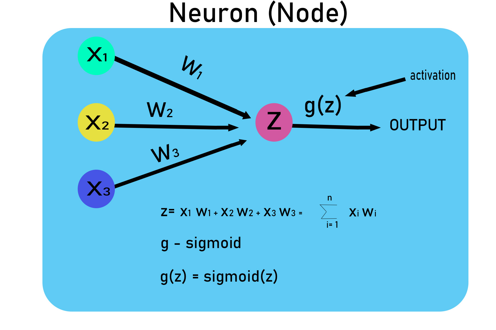

The project aims to create a cleaner, more organized dataset,
that adheres to standardized formats, resolves missing data issues
and eliminates redundancies. The structured SQL queries
and updates are designed to enhance the overall quality and usability
of the Nashville Housing dataset within the PortfolioProject database.
Additionally, potential advanced data import methods using
OPENROWSET and BULK INSERT are presented for consideration.
it in SQL Server to make it more usable for analysis.


This project reviews several trends in crime and policing in the city of Dallas.
The analysis of crime reported by the police in various areas, on various days and times of the day.
Furthermore, patterns in the racial distribution of offenders are noticed. The analyses' goal is to
discover patterns that will assist make policing more effective in combating crime in the future.

In this project, I embarked on the creation of a neural network from scratch for the
Lander Game demonstrates the fusion of theoretical knowledge and practical implementation,
providing a valuable resource for enthusiasts and learners in the realm of artificial
intelligence and game development..

Tableau Dashboards for projects on Financial Analysis and Forecasting, and Loan Default
The task involves analyzing a dataset named "house-data.csv" from the perspective
of classification, prediction, and validation using the R programming language.
In this project, I look at what variables effect the gross revenue from movies.

In this project I scrape data from Amazon to analyze price data for products.